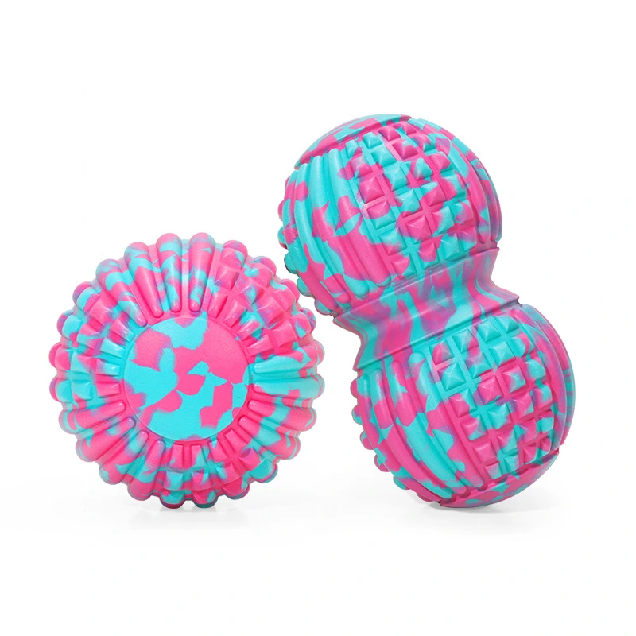
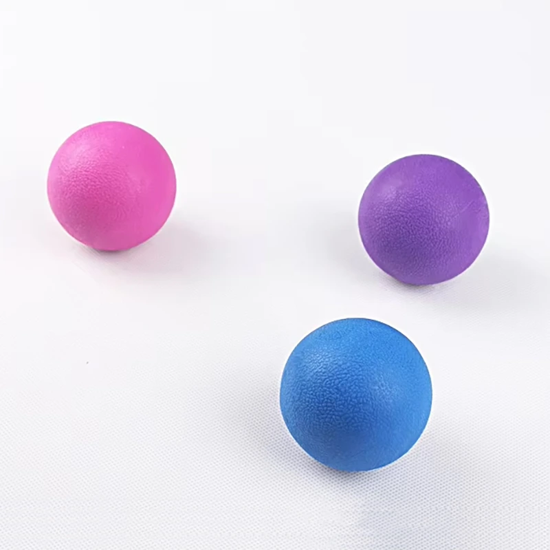
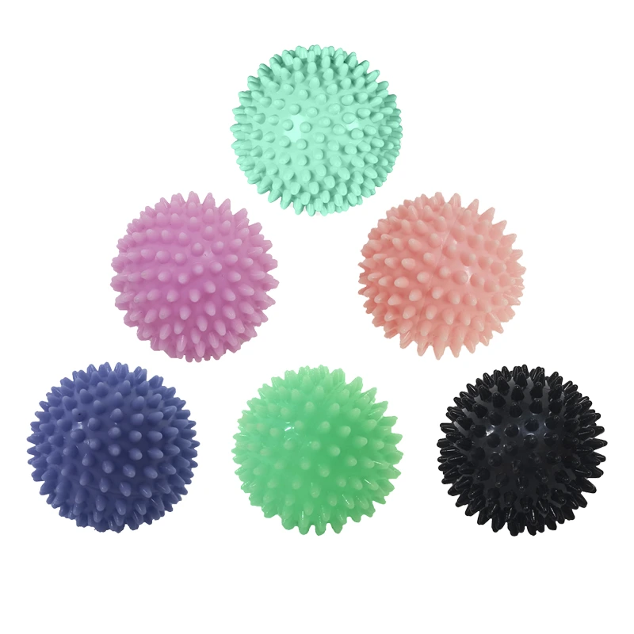
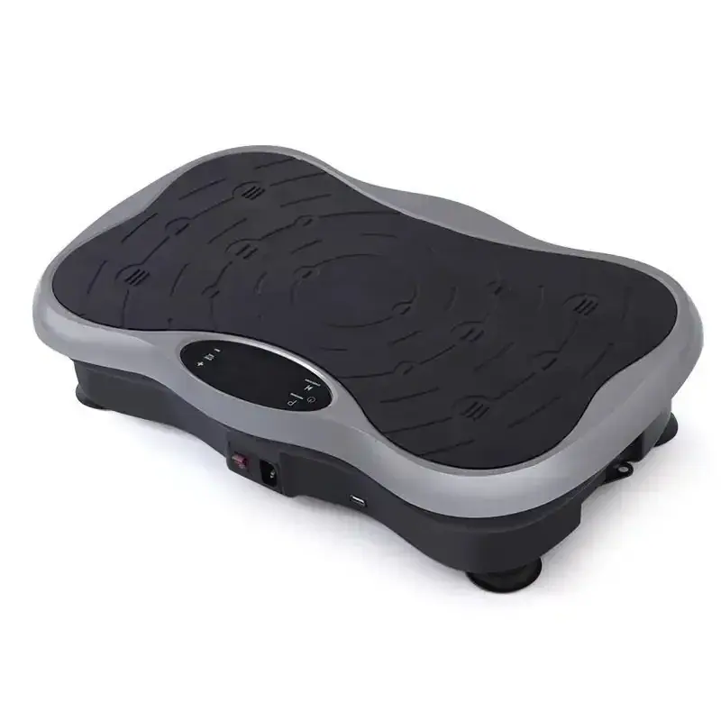

Pistolets de massage des fascias, balles de massage des fascias, bâtons de massage, appareils de massage et pinces pour les jambes : la gamme de produits de récupération à associer à chaque commande de tapis. Prête à être commercialisée sous marque de distributeur.
Les outils de récupération ne sont pas interchangeables, et la différence tient à la force que le client veut fournir. Les pistolets de fasciathérapie délivrent une percussion à haute fréquence par moteur : c'est l'outil qui travaille. Les balles et rouleaux de fasciathérapie sont des outils au poids du corps — l'utilisateur s'appuie dessus, ce qui les rend bon marché, silencieux et difficiles à casser. Les bâtons de massage atteignent le dos et les mollets là où vos mains ne vont pas, et les pinces de jambe compriment le mollet sans aucun effort de l'utilisateur.
La gamme de pistolets couvre quatre types de prise, car la taille de la main et la zone visée décident de la vente : une version blanche compacte pour le commerce général, une forme en T pour atteindre le dos, une version à poignée annulaire qui se tient de deux façons, et un modèle professionnel pour les thérapeutes qui l'utilisent toute la journée. Les quatre partagent la même famille de moteurs : la différence est ergonomique, pas de performance.
C'est la catégorie qui s'associe le plus naturellement à une commande de tapis, car la récupération est ce qui se passe le lendemain du cours. Une salle ou un studio qui achète des tapis peut prendre pistolets, balles et bâtons dans le même envoi, dans les mêmes couleurs, et distribuer ou vendre un kit de récupération complet. Les balles de fasciathérapie sont produites en ensemble de six couleurs exactement pour cela. La quantité minimale est de 100 pièces, avec un échantillon en 7 jours environ.

Balle de massage fascial pour soulager les épaules, le dos, la taille et les pieds.

Tuyau en PP + acier inoxydable · 25*24*7cm / 25*24*9.7cm

ABS + Composants électroniques · 14 × 5,5 ×15cm

Fabriqué sur commande

Fabriqué sur commande

Fabriqué sur commande

Fabriqué sur commande

Fabriqué sur commande

Fabriqué sur commande

Tuyau en PP + acier inoxydable · 34 × 5,5 ×5.5cm

Tuyau en PP + acier inoxydable · 32 ×4.5cm

Fabriqué sur commande

Fabriqué sur commande

Fabriqué sur commande

Fabriqué sur commande
Les questions que les acheteurs nous posent le plus, vues de nos propres lignes :
Envoyez-nous votre dessin, le prix souhaité ou une photo : nous vous répondrons dans les 24 heures avec un devis et un plan d'échantillonnage. Quantité minimale de commande : 100 pièces.
Demander un devis